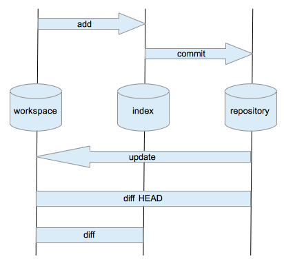

Software Carpentry's mission is to help scientists teach other scientists how to be better programmers. If we want to do that successfully, we need to be scientists ourselves. In particular, we need to base what we teach on evidence, not anecdotes or personal preferences.
For example: we taught Git at the Toronto boot camp last week, and once again I think our learners would have absorbed more if we'd taught Subversion. Why? Well, take a look at this diagram by Oliver Steele (which I found on this page written by Nick Quaranto):

Four locations are in play, and eight different commands are used to move information around or compare what's in one place to another. Now look at the corresponding diagram for Subversion:

There are only three locations for people to keep track of, and the basic workflow involves only four commands. If you believe complexity is partially multiplicative (because people have to keep track of the interactions between things, as well as the things themselves), Git is at least twice as complex for people to understand. Slicing it another way, there are more opportunities for people to do the wrong thing with Git, and more they have to understand to undo it. And that's before we introduce branches...
But that's just my point of view, and the fact that I can wrap a plausible story around it doesn't make it true. Matt Davis and others believe they've been successful with Git in front of the same kinds of people. We need to find out who's right, so our major goal for the next three months is to poll and interview boot camp attendees to find out who was taught what, who tried what, who's still using what, and why. Caitlyn Pickens will be leading this effort, and many of you will get email from her in the next few weeks. When it arrives, please take a few minutes to tell us what you're actually doing, even if it's not what we told you to do—especially if it's not, because that'll tell us what we need to fix.
Originally posted 2013-05-10 by Greg Wilson in Assessment, Opinion.
comments powered by Disqus